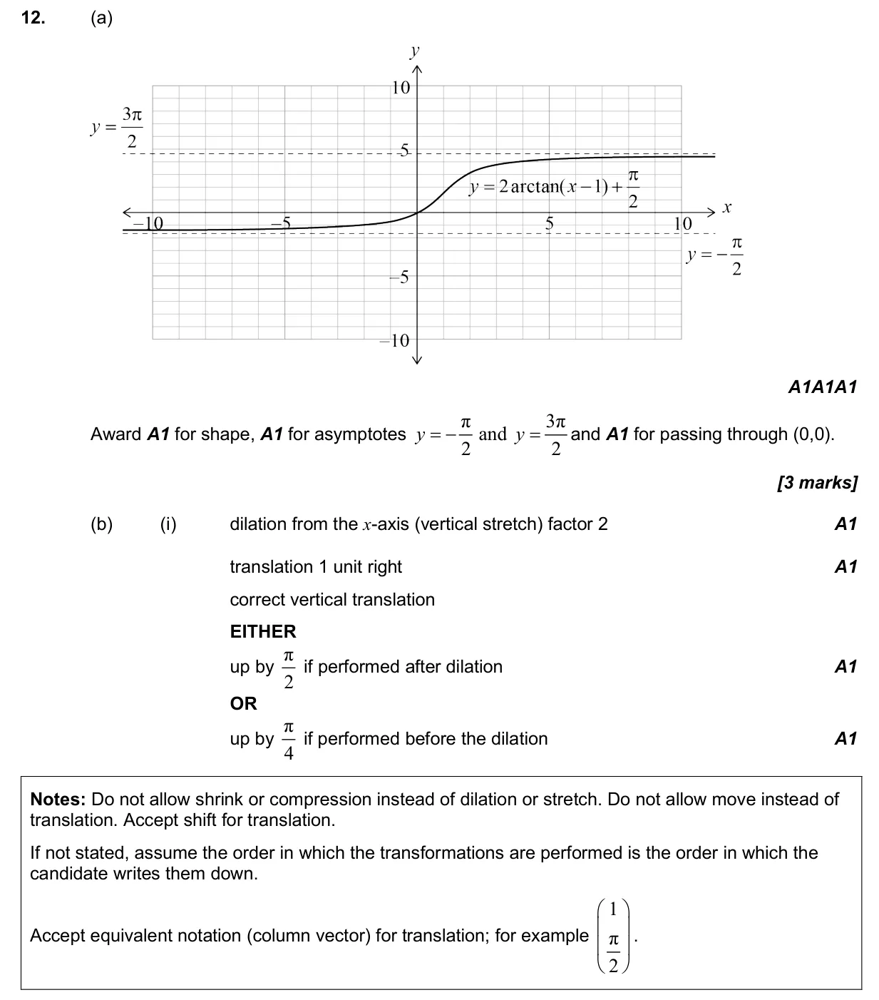
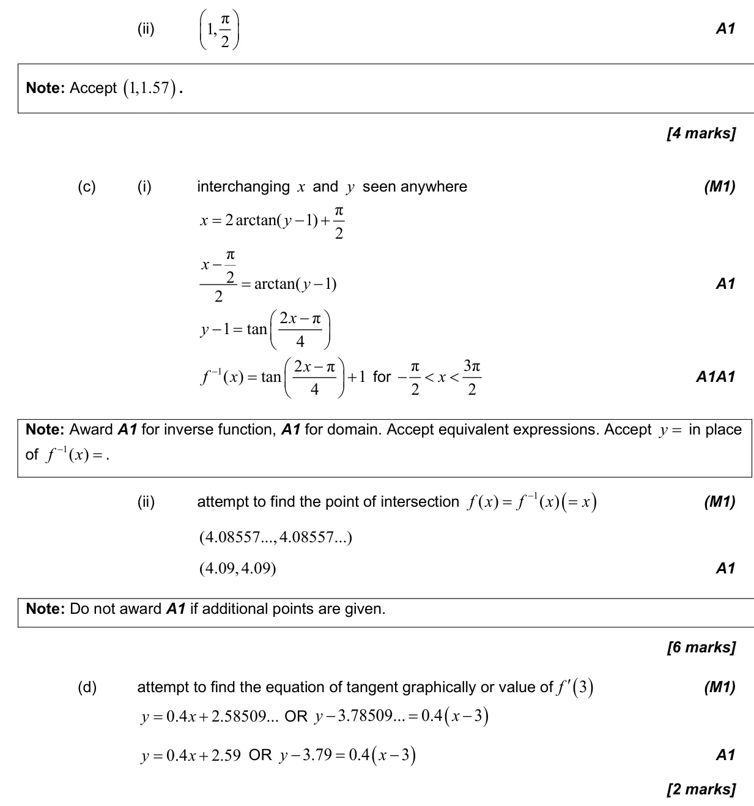
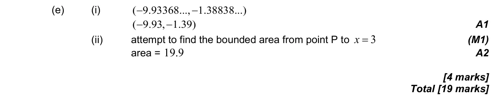

2.11 Transformations of graphs5.4 Tangents and normals2.5 Composite functions, identity and finding inverse2.4 Key features of graphs5.11 Definite integrals, areas under curve onto x-axis and areas between curves3.9 Reciprocal trigonometric ratios, Pythagorean identities and inverse trigonometric functions2.3 Graphs of functions
Question

Markscheme


